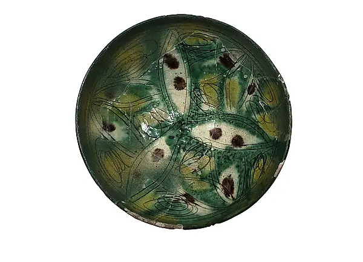
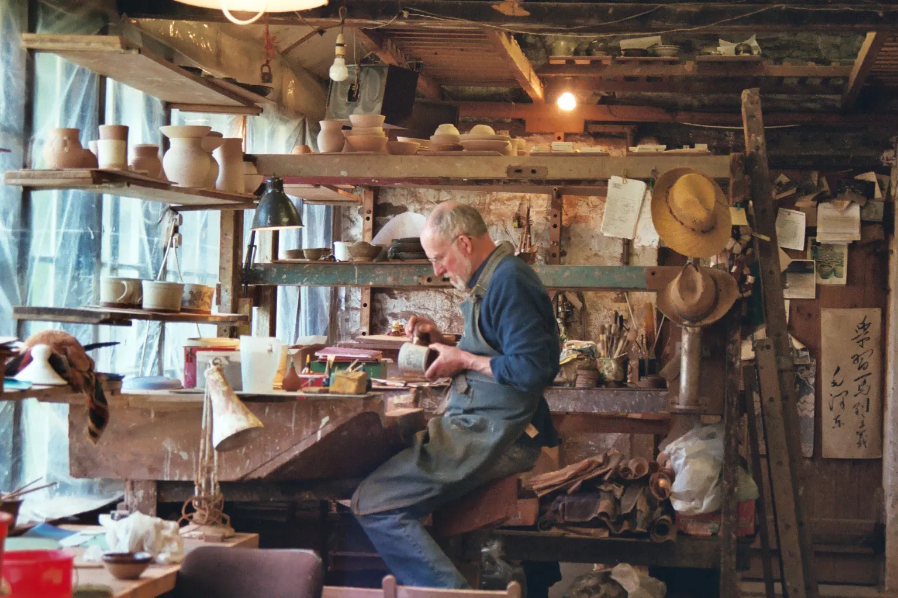
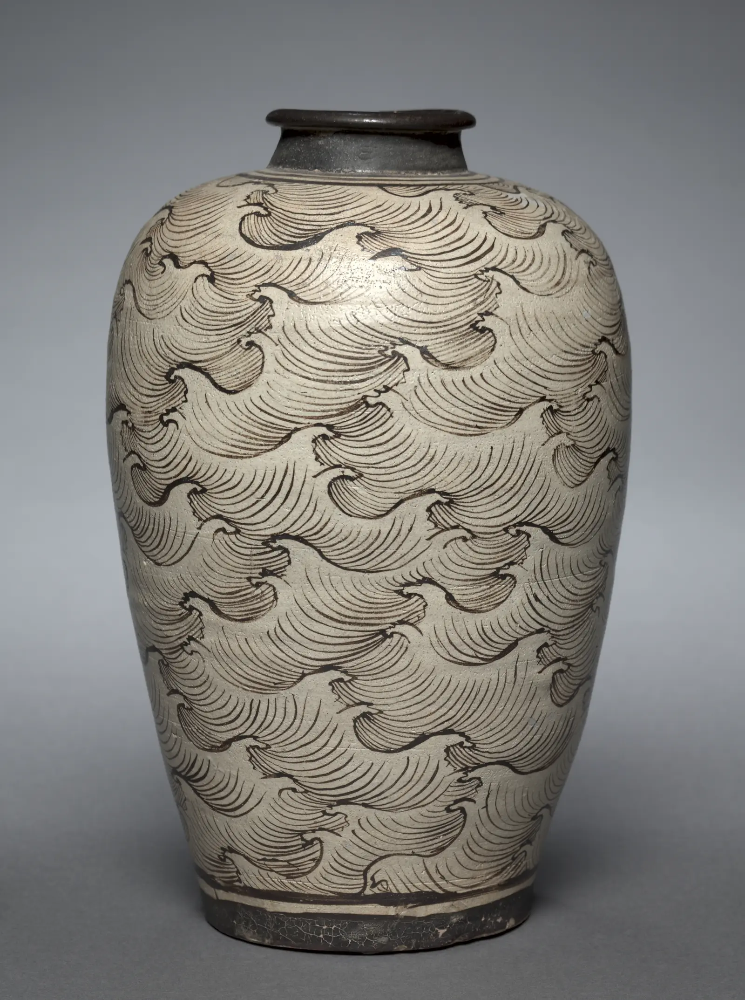
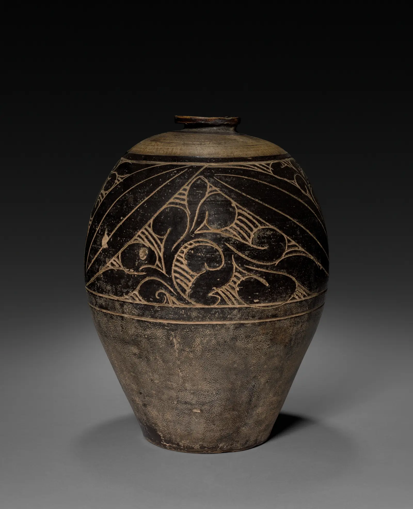
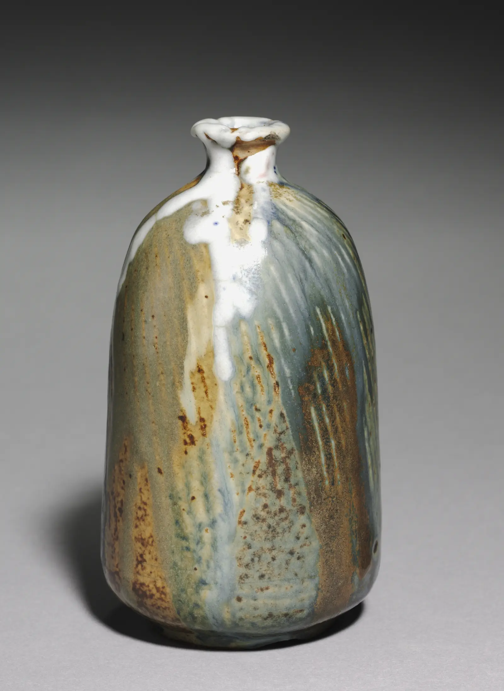

Prerequisite
Reliable forms and joins; access to studio-approved slips, underglazes, glazes, and firing.
Phase 06 · 8–12 hours + firing
Surface is a layered event: clay, timing, tool, material, firing, and light. Replace random decoration with a testable visual language.

Aim
Reliable forms and joins; access to studio-approved slips, underglazes, glazes, and firing.
You can analyze surfaces, time marks to clay state, run a test matrix, and adapt a motif to volume.
A surface reading, timing lab, 12-tile matrix, form translation, and one resolved vessel.
What exactly makes a surface feel quiet, dense, directional, or unstable?
Field, border, focal point, rhythm, scale, density, and negative space.
Cut, impress, trail, brush, resist, scrape, pool, break, and expose.
Follow, oppose, frame, interrupt, conceal, or reveal the volume.
Choose three ceramic works from a museum collection. For each, make a grayscale thumbnail and annotate: visual route, densest zone, quietest zone, likely sequence of layers, and how the pattern responds to the form. Separate direct evidence from inference.

Wet clay yields and drags; leather-hard clay can hold a crisp cut; dry clay is fragile and creates dust risk. Match the operation to the state and the result you want.
Slip decoration by Stephen Driver, photographed by Peter Bruce Dick, CC BY-SA 4.0. Source
Prepare small tiles from the same clay. At workable, soft leather-hard, and firm leather-hard states, test impressing, carving, and brushing an approved slip or underglaze. Keep tool, gesture, and size constant.
Record edge crispness, drag, distortion, flaking, absorption, and repairability. Do not casually sand dry clay; use wet cleanup and your studio’s silica controls.
| Variable | Levels | Hold constant |
|---|---|---|
| Ground | Bare clay / approved slip | Clay body and tile size |
| Mark | Incised / brushed / resisted | Motif and scale |
| Top layer | None / studio glaze | Application method and firing |
Number every tile on the back. Record material names, batch if known, layer order, application count or measured mass where practical, firing identification, and result.
Map where the form turns, where hands and lips meet it, and where the eye should pause. A surface succeeds when these maps converse.
A motif viewed on a flat sketch will compress around a shoulder and accelerate around a narrow neck. Use paper wraps, acetate overlays, or a sacrificial clay maquette to predict that change.
Inspiration · look comparatively
Compare repetition painted over volume, slip cut away to expose the body, and glaze redirected by gravity.



Knowledge check · 3 questions
Choose one answer for each situation. Open a hint when needed; explanations appear after you check all three.
Phase checkpoint · 20 points
| Criterion | 1 | 2 | 3 | 4 |
|---|---|---|---|---|
| Visual structure | Random | Partial rule | Clear hierarchy | Hierarchy enriches viewing |
| Timing/craft | Damage/flaking | Uneven control | State suits technique | Timing creates intended character |
| Form relation | Ignores volume | Mostly applied flat | Responds to transitions | Surface and form are inseparable |
| Testing | Undocumented | Few variables controlled | Traceable matrix | Tests support prediction |
| Reflection | Taste only | Describes result | Explains causal change | Proposes discriminating next test |
{kind=link}